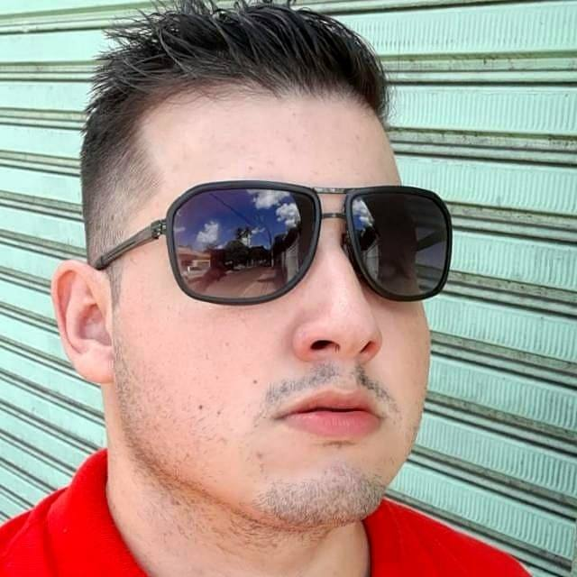

Jose Eduardo Moreira
Empresario | Pecuarista | Programador
Desenvolvimento Web FullStack
Torne-se um desenvolvedor web FullStack pronto para o mercado de trabalho !
Conhecer o Pantanal
Aproveite essa oportunidade com a Pioneiro Turismo!
Noite Pantaneira
A festa tipica do homem pantaneiro, valorizando a cultura e o modo de viver do povo pantaneiro.